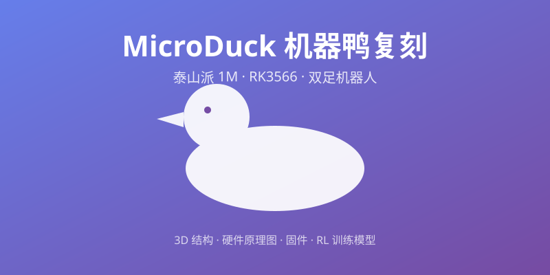
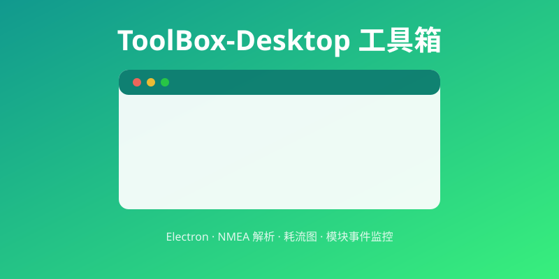

项目经验
项目页面会根据 myproject 中的项目目录或说明文件自动生成。

MicroDuck 机器鸭复刻 进行中
用立创·泰山派 1M（RK3566）复刻 Pollen Robotics 开源双足机器鸭 MicroDuck。一个月周期，覆盖 3D 结构、硬件、软件、训练模型四条线，全程踩坑记录。
RK3566双足机器人KiCad 原理图STS3217 舵机IMU
查看详情

ToolBox-Desktop 嵌入式工具箱 持续迭代
Electron 桌面工具集：NMEA 定位数据解析、模块事件监控（拖拽分区/数据源配色/粘贴自动解析）、耗流图与电流趋势图、固件发布注册管理。
ElectronNMEA串口调试数据可视化